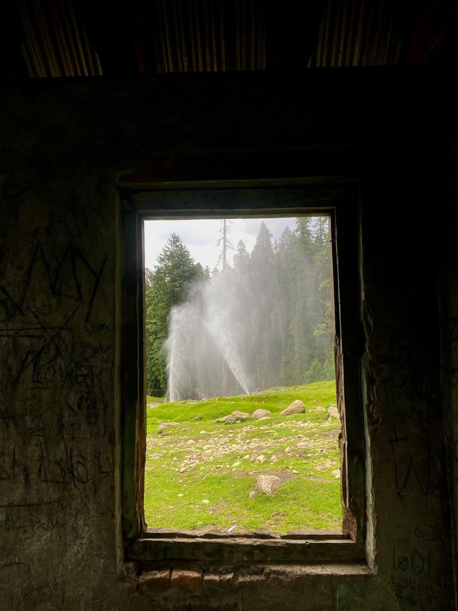
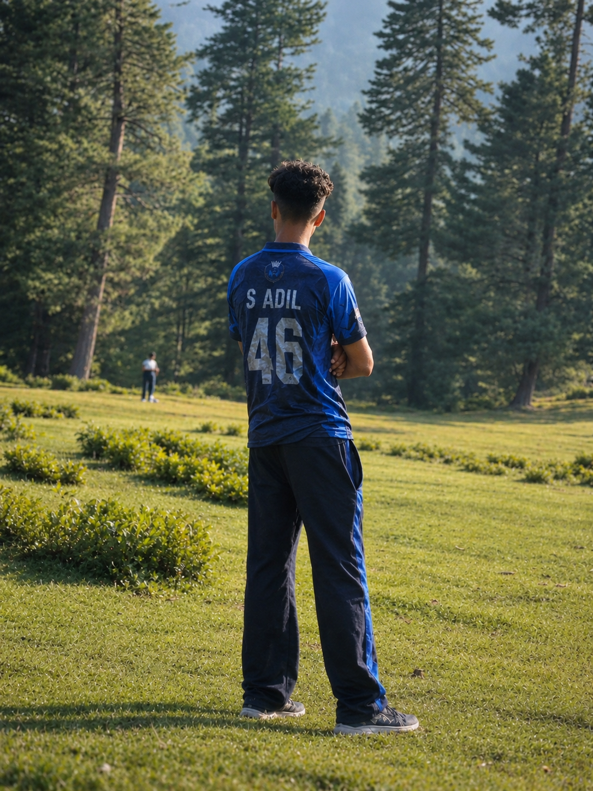
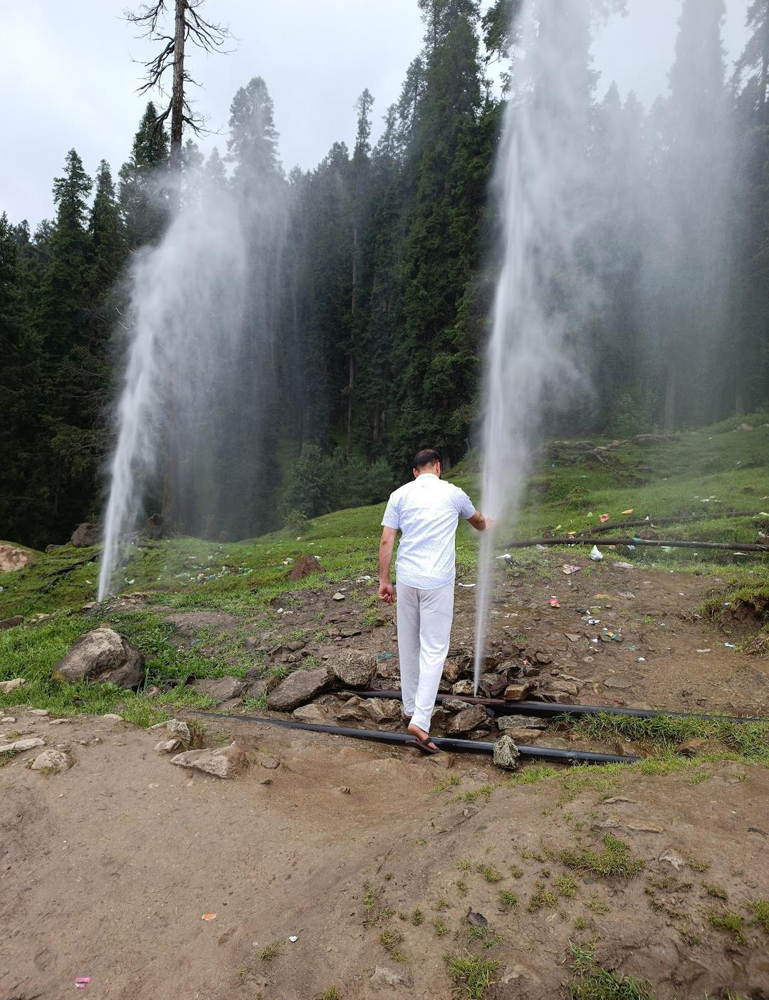
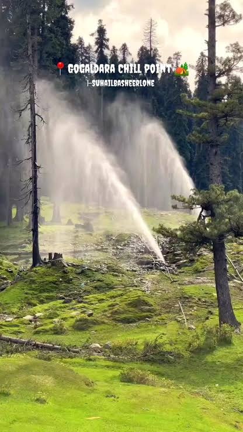
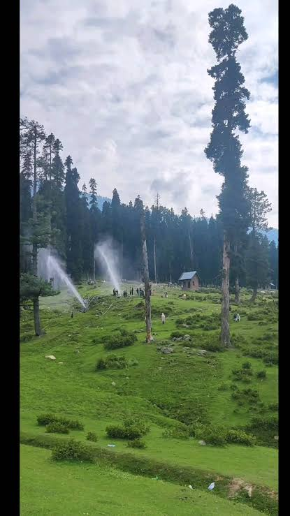
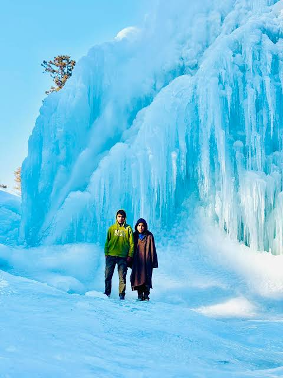

Explore Gogaldara & Surrounds
Everything you need for an unforgettable journey: the 35-ft icicles at Chill Point, winter sledging, authentic cuisine, and practical route logistics from Srinagar.
Unmissable Places to Visit

Chill Point (Gogaldara)
Gogaldara’s defining winter marvel: a rock face where continuous natural hillside seepages freeze into giant 35-foot vertical icicles from December through February. Surrounded by thick fir trees, it is a dream destination for photographers and winter nature lovers.

Tangmarg Town
Located 13 km before Gogaldara, Tangmarg is the historic hub of local handicrafts, walnut carvings, hand-woven carpets, fruit orchards, and where travelers can hire local cabs or rent snow boots and winter pherans.

Shrine of Baba Reshi
A revered 15th-century Sufi shrine dedicated to Baba Payam-ud-Din Reshi, located a short drive toward Gulmarg. Famed for its traditional pinewood tiered architecture and peaceful spiritual aura among dense forests.

Drung Cascade & Mountain Streams
The famous frozen Drung cascade is situated just a short diversion from Tangmarg. Combining Drung and Gogaldara provides the ultimate winter ice tour of North Kashmir without the Gulmarg tourist rush.
Activities in Gogaldara
Outdoor pursuits for thrill-seekers, families, and lovers of quiet wilderness.
Winter Sledging
Rent wooden sledges from local villagers to slide down gentle powder slopes around Gogaldara and Chill Point.
Pine Forest Treks
Tranquil hiking loops through aromatic deodar groves following centuries-old shepherd trails toward upper ridges.
Landscape Photography
Unfiltered golden hour light on snow-laden firs, macro icicle textures, and pastoral village silhouettes.
Summer Meadow Picnics
Relax beside bubbling natural springs in blooming wildflower meadows with packed Kashmiri noon-chai and rotis.
Food & Warm Mountain Drinks
Kashmir’s gastronomy is rooted in slow wood-fire cooking, warming whole spices, and nourishing mountain ingredients.

Mountain Hearth & Saffron Kahwa
Boiled in a traditional samovar, fragrant green tea sweetened with genuine saffron strands, cardamom, cinnamon, and slivered almonds. The ultimate shield against alpine chills.

Traditional Winter Feasts & Wazwan
Slow-braised mountain preparations infused with aromatic cockscomb flower, Kashmiri spices, and tender highland vegetables. Available across authentic Tangmarg and valley homestays.

Rustic Village Hospitality & Noon Chai
Crisp wood-baked mountain breads, farm butter, and soothing salted pink tea (Noon Chai) prepared by local families welcoming travelers with heartfelt Kashmiri hospitality.
How to Reach Gogaldara
Detailed connectivity from airport, railway station, and the main Tangmarg taxi stand.
By Air (Srinagar Airport)
Sheikh ul-Alam International Airport (SXR) in Srinagar is approximately 60 km away. Taxis take roughly 1.5 to 2 hours via the 4-lane Srinagar-Gulmarg highway to Tangmarg, then onward to Gogaldara.
By Rail (Baramulla Station)
Baramulla Railway Station is roughly 40 km away. It connects to the Kashmir Valley rail corridor (Banihal-Srinagar-Baramulla). Shared taxis and private sumos run frequently to Tangmarg.
By Road (From Tangmarg)
From Tangmarg town, Gogaldara is a 13 km winding mountain drive. Local taxi union vehicles and 4x4 Gypsy jeeps are stationed in Tangmarg. In heavy snow, anti-skid tyre chains are mandatory.
Gogaldara & Tangmarg Regional Map
Interactive map displaying Tangmarg Tehsil, Baramulla, and surrounding Pir Panjal foothills.